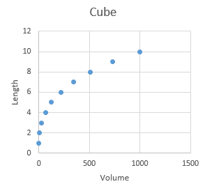
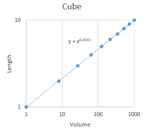
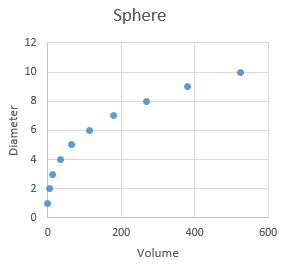
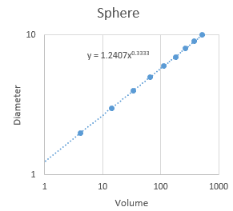
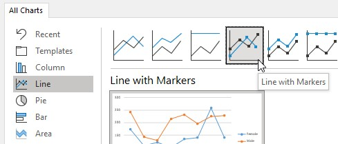

If you recall from lecture, there are two major reasons to graph data: 1) to increase your own understanding of your data, and 2) to produce a clear presentation of the data for others. Today we will work with graphs that serve at least one of these purposes, sometimes both.
Download this file to a new folder in your OneDrive and open it in Excel.
The data set we will use contains measurements of sizes and shapes of bears captured over the course of one active season, between their emergence from hibernation in the spring and return to hibernation again in the fall. At each capture, bears were tranquilized for measurement. The variables recorded, and their variable types, are:
| Variable |
Variable definition | Variable type |
|---|---|---|
| ID |
A unique identifier for individuals |
Numbers are used as ID's, but are meant to be labels - treat as categories |
| Age |
Age in months |
Numeric, discrete |
| Month |
Numeric month |
Numeric, discrete, circular scale. Can be used as an ordinal set of categories (as though the names of
the months were used instead of numbers) |
| Sex |
Sex of each bear |
Categorical |
| Head length |
Length of head in cm |
Numeric, continuous |
| Head width | Width of head in cm | Numeric, continuous |
| Neck girth | Distance around the neck in cm | Numeric, continuous |
| Weight | Weight in kg | Numeric, continuous |
| Observation number | A sequential number indicating which measurement the row represents for bears measured more than once | Numeric, but meant to indicate an order - treat as an ordinal label |
| Name | Name of the bear | Categorical |
Knowing the variable types allows us to pick appropriate graph types. Be aware that the variable type is sometimes different than it appears to be - Month, ID, and Observation Number are all represented as numbers, but we will be using them as though they were ordinal categories that could be replaced with non-numeric labels with no loss of information (for example, month can be indicated by words instead of numbers without changing the interpretation of the variable).
Keep in mind that sometimes nominal categorical variables - that is, categories without a natural ordering to them - are represented with numeric codes, but that doesn't make them either numeric data or ordinal categories. For example, Sex might be coded as 1 for male and 2 for female, but there is no natural ordering to the male and female levels, and we could have just as easily used 2 for male and 1 for female. It wouldn't make sense to do calculations on the numbers, such as calculating the mean of the 1's and 2's, even though it would be possible to do so. If numeric codes are used to indicate un-ordered categories they should be analyzed as though they are un-ordered categories, not numeric variables.
Today we will make graphs that will help us address the following questions:
1. What is the nature of the relationship between weight (a volumetric variable) and various measured lengths (all of which are linear variables)?
2. Is there a difference in the length/weight relationship between males and females?
3. What are the average weights of males and females?
4. How does body weight vary from month to month for each sex?
The first and second questions are analytical - we need to know the nature of the relationship between weight and length before we can compare this relationship between the sexes, so we need to answer the first question before we can answer the second. The third and fourth questions would normally be addressed analytically by conducting t-tests or analysis of variance (ANOVA) to test for differences in means between groups, and the graphs would be used to help communicate the results in a way that is easy to understand - we won't do the statistical hypothesis testing today, but will learn to make the graphs that support those analyses.
Programs that are written to primarily be graphing packages would be less fussy than Excel is about data organization. For example, when we build a graph we would be able to assign any column we want to the x-axis and the y-axis, and would be able to group by a categorical variable for assigning colors and symbols.
Excel doesn't give us these conveniences. We will be producing several scatter plots with these data, in which the weight of the bears is the x-axis. By default Excel uses the left-most column in the range of selected data as x, so to make the graphing easier it's helpful to move the Weight column to be the left-most of the data columns.
To move Weight:
You should now have Weights in column E, and all the rest of the data columns to the right of it with no blank columns.
Lengths and volumes of simple geometric objects, like cubes and spheres, have power function relationships. Power functions relate one variable to a second variable that is raised to an exponent.
| 
For example, the volume of a cube is v = l3, where l is the length of one side. Since length is a variable, and it is being raised to an exponent, this is a power function relationship. Equivalently, we can express the relationship between volume and length as l = v1/3 , and again since volume is being raised to an exponent this is also a power function (using 1/3 in the exponent is the same as ∛v). A plot of length vs. volume is shown to the left. If we take the log of both sides of the equation, we get: log(l) = 1/3 log(v) which is the equation for a straight line with an intercept of 0 and a slope of 1/3. To get this straight line formula out of our power function relationship we needed to put both length and volume are on a log scale, so when we put the graph on a log scale for both axes the curved line that related volume to length straightens out, like the example on the right. If we ask Excel to fit a power function trend line to the data it tells us that y = x0.3333, which is the relationship we were expecting. |
| 
Similarly, we can derive the relationship between diameter and volume of a sphere in the same way: volume of a sphere is v = 4/3 π (d/2)3, where d is the diameter of the sphere through the center to the surface (d/2 is the radius from the center to any point on the surface). The relationship between volume and radius is thus d = 2(3/(4π)1/3)v1/3. The coefficient (i.e. the constant being multiplied by v) is fearsome looking, but 2(3/(4π)1/3) is just a constant, equal to 1.2407. On a log scale this power function becomes: log(d) = log(2(3/(4π)1/3))+ 1/3 log(v) The value log(2(3/(4π)1/3)) is the log of 1.2407 (equal to 0.09367), and will be the intercept for a straight line on a log-log plot. The fact that the intercept is not zero for a sphere will make the line intersect the y-axis higher than the the line for the cube did, but both the cube and the sphere have a slope of 1/3, so they would be parallel with one another on the graph with log-scale axes. The trend line's equation on the log-log plot on the right shows that the exponent is still 0.3333 just like the cube, and the only difference is that the constant is equal to 1.2407, as we were expecting. |
So, with simple, solid geometric objects we expect the exponent on the power function that relates a linear measurement to a volumetric one to be 1/3, and the only difference between objects will be the intercept term.
In principle we could calculate the volume of bears by submerging them in water and recording the volume of water displaced, but this is hard to measure in the field. However, weight is relatively easy to measure on an anesthetized bear, and we have weight data available.
Weight is not volume but should be proportional to volume, so we can consider weight to be a "volumetric" measurement. We would expect a power function relationship between bear weights and linear dimensions with an exponent of 1/3, if bears were simple geometric objects. Bears are not, however, simple geometric objects - the relationship will probably be a power function but we can't be certain that the exponent will be exactly 1/3.
Studying the scaling relationships between different body dimensions and weight is called allometry, so we will be estimating the allometric scaling relationship between length and weight of these bears.
We will start by making a scatter plot of the lengths of the bears vs. their weights, and will then change the axes to log scales to confirm that a power function is the right relationship between length and weight. Once we are confident this is the case, we can use Excel's trend lines to give us the equation that describes the relationship.
A. To begin, you will make the basic plot of length vs. weight, with weight on the x-axis, and length the y-axis:
The scatter of points should look like it follows a curved line - if you imagine a line running through the cloud of points as you move from left to right along the x-axis the line would need to curve to stay in the middle. The relationship is not linear (linear means a straight line, not a curved line).
To record a picture of this version of the graph that won't change when you change the graph in the following steps:
You should now have a picture of your graph that will not change as you change the graph.
B. Now to help us determine the relationship between weight and length we're going to change the axis scaling for one axis at a time. We'll start by changing the y-axis scaling only:
Now we'll set the x-axis scale to logarithmic, and the y-axis scale back to linear:
The data are closer to a logarithmic relationship than an exponential relationship, but we have one more to go (the one we expect will work best for our data) - now we'll set both axes to be logarithmic, and if the points follow a straight line we'll conclude they have a power function relationship.
You now have both axes on logarithmic scales, so this is a log-log plot (the graphs with only one log-scale axis were semi-log plots). We expected a power function relationship between weight and length, and the data are straightest in this graph compared to the others, indicating that there is in fact a power function relationship between length and weight.
Change the title to "Power" - don't copy/paste as picture, though, since we're going to make some changes in the next steps.
Now that we have reason to think the variables do in fact have a power function relationship we can use Excel to fit a trend line and give us the equation.
The four different possible functional relationships we explored by changing x and y axes to log scale are shown below. Hover over each in the image below to see the functions relating y to x for each one, and why they straighten out depending on the x and y axis scaling selected.
y = a10bx
Taking the log of both sides gives us:
log(y) = log(a) + bx.
Exponential relationships become straight lines on a plot when y is graphed on a log scale with x on a linear scale
Linear relationships have the form:y = a + bx
Linear relationships give straight lines on a plot with both y and x on a linear scale
Logarithmic relationships have the form:10y = axb
Taking the log of both sides gives us:
y = log(a) + b log(x)
Logarithmic relationships become straight lines on a plot when y is graphed on a linear scale, with x graphed on a log scale
Power functions have the form:y = axb
Taking the log of both sides gives us:
log(y) = log(a) + b log(x)
Power functions become straight lines on a plot when both y and x are graphed on a log-log scale.
We know now based on our graphs that the relationship we need is a power relationship, so we can add a power function trend line to the graph
The equation is expressed in its un-transformed form, and you'll see it's y = 17.004x0.2494. Remember that with a simple geometric solid the scaling relationship between length and volume of a simple geometric shape would have a 1/3 exponent, but here the relationship is 0.2494. The exponent is different from 1/3 both because the bear is an irregular object and because the units differ between length and weight.
We used log axis scaling to find the right trend line function to use for our data, but it's perfectly acceptable to plot on linear axes once you have that figured out. Un-check the logarithmic axes boxes for both x and y, and your final graph will be a curved line with the power function equation next to it.
To compare the length/width relationship we will need to plot two different sets of points on the same graph, one for each sex. If you remember making graphs in your stat class, we could just identify a grouping variable to automatically separate the data for plotting, but Excel can't do this. In Excel you either need to re-arrange your data so that each sex is in a different column, or you need to plot one sex first, and then add the other to the graph manually. We will use the second approach since it doesn't require us to rearrange our data: we will plot the females first, then add the male data manually.
A. To make it easy to select the male and female data separately we'll sort the data by sex:
B. Now we can make the initial plot of Length against Weight for females.
C. Now we'll add the male data - this is done in several steps:
You'll see that the line for males is steeper than for females - at lighter weights the males are shorter than females, but at heavier weights the males are longer.
Graphing means for groups of data is a very common graph type in the sciences. Column charts are a good choice for this kind of graph.
You will produce a column chart of weights for each sex. The easiest way to do this is to first produce a pivot table with the needed data, then use the "PivotChart" to graph the data. PivotCharts make charts from PivotTables, and allow you to modify the charts by dragging fields around, like we do with PivotTables.
A. You know how to do PivotTables already, but just to remind you...
B. Now we'll use the PivotTable as the basis for the column PivotChart.
PivotCharts are designed for exploring your data, rather than for final presentation. PivotCharts are linked to the Pivot Table, and as you change the table the chart will change to reflect its new contents. The gray button that says "Average of Weight" gives the variable you are graphing, and the "Sex" drop down allows you to filter and sort the levels of sex.
C. Although the basic chart is fine, the default choice of title is poor, there are no axis labels, no error bars, and it uses a legend that is unneeded since there is only one variable being graphed. To fix those issues:
If we want to see how males and females vary in their weights over time we can modify our column chart to graph the averages for each sex by month. We can make this kind of graph in a couple of different ways in Excel, using columns or using points (the latter is actually a line graph without the lines). We'll see how each of these is done.
We basically already have this, so we'll modify the graph of means by sex that we just made to add a grouping for month.
A. First we will update the PivotTable to group by both sex and month:
You now have a graph of the mean weight of bears of each sex by month.
The sexes are grouped together for each month with space between the columns for each month to make it easier to see which columns are from which month - this is a clustered bar chart, and is a good choice for displaying the means.
The one disadvantage of using column charts is that the columns show the space from 0 to the number being displayed. If the means we were displaying were all large numbers, with differences between them that were small compared with the size of the numbers, most of the graph would be filled with empty space and the actual data would be clustered up at the very top to the point that the differences between the groups would be hard to see.
Another alternative is to display the means using points - with no columns on the graph it's acceptable to have the y-axis start someplace other than 0, and it becomes easier to see the actual data.
To graph the means as symbols, with error bars around them, we start with a line graph and then remove the lines.
A. The data are exactly the same as the grouped column chart we just made, so we can use the same PivotTable. Select a cell in the PivotTable, insert a new PivotChart, but this time select a line graph with markers showing.
Even though a line graph has a categorical x-axis, we have measurements for each month of the study with none missing, so the spacing between months is correct.
Add a chart title ("Weights by month - line"), x-axis title ("Month"), and y-axis title ("Weight").
B. We want to add error bars to the graph for each mean:
Next we can remove the lines from the graph so that we only have the points, without the lines - we used a line chart to get our months on the x-axis as a set of categories, but connecting the means each month with a line is not necessarily a good choice because the lines are conspicuous features of the graph that are not actually data. If we just want to have the means displayed we should remove the lines.
You should now have a graph with means represented by points, with error bars indicating 1 standard error above and below the points.
Drag the line-based graph you just made below the grouped column graph of the same data - you'll see that one of the differences between them is that the line-based graph we just made put the male and female means for the same month at the same position along the x-axis, such that they are vertically aligned. In the column chart they are sitting next to each other.
The y-axis scaling is still starting at 0 for the line-based graph, but this is because the means are not very big - if the values were much bigger Excel would start higher than 0 on the y-axis.
Line graphs and column graphs have categorical x-axes
It's important to remember that Excel makes assumptions about your data based on the graph type, not based on the data values you are using. If you look at the x-axis on either the line graph or the column graph you just made it sure looks like a numeric axis - it's made up of numbers, they're in the right order, and they are each 1 unit apart.
But, the order and spacing of the numbers is a side-effect of the way month is represented in the data - by recording the months as numbers the months sort in the correct order. Since there is data from every month between April and November there are no gaps in the time series, and each month is 1 away from the previous month and the next month in the series.
When we tell Excel to use a line graph for these data, it treats the month numbers as categories. This isn't a problem with these data, but could be if we didn't have a month of data recorded - you can see what Excel would do in this instance by:
- Drop down the filter button next to the Row Labels in your PivotTable
- Un-check 7 - this will remove the July data from the table
You'll see both of the PivotCharts update to reflect the new structure of the table, and rather than leaving a blank for 7 it just puts 6 and 8 together. This would not have happened if the x-axis was numeric - if the x-axis numeric it would show a gap at 7 rather than just sliding 8 over to be next to 6.
The other way this can cause problems is if you want to use these graphs with categorical x-axes to get trend lines. Excel lets you get a trend line and an equation from graphs, which seems like a nice shortcut compared to running regression in Jamovi, Minitab, or R to get the equation. But, since the x-axis is categorical Excel doesn't use the month numbers to get the trend line - instead, it assigns a number from 1 to 8 for the eight month categories, and uses these as the x data for the the regression. The equation you get for the trend line would not be the same as if you actually did the regression using the month numbers, but there would not even be a warning that the trend line isn't what it appears to be.
This is bad, and I have no idea why Excel does this - it should refuse to fit a trend line on a graph with a categorical axis, or at least give a clear warning message indicating what the trend line actually is.
But, since Excel is happy to do the wrong thing in this case, this is one of those instances where you have to accept the responsibility of knowing how your tools work so that you can use them properly.
If you need the x-axis to be numeric then you would need to use a scatter plot as the graph type. There are some additional steps needed to make this work, since Excel will not make a scatter plot as a PivotChart. To reproduce the graph as a scatter plot you would need to:
- Make the PivotTable with the means for each group by month
- Add a column of standard deviations and sample sizes for each month
- Copy the PivotTable, and paste-special as values someplace else in the spreadsheet
- Calculate the standard errors for each month by sex (standard error is standard deviation divided by the square root of the sample size)
- Make the scatter plot using month on the x-axis and mean weight for each sex as a data series for the y-axis
- Specify the error bars as cells in the table, and select the standard errors you calculated
When you have data like these with a numeric x-axis variable with every number represented it's much more convenient to use a bar chart or line graph.
We are going to generate some counts of numbers of observations by month, and then look at our graphing options for this kind of data. We usually treat counts of categories as compositional data - that is, data that represents parts of a whole. The total numbers of observations may be of interest, since it might tell us something about which month the bears are most active. Or, alternatively we may want to focus on whether it is primarily males or females that are active each moth, in which case the relative number of each sex that is present may be what we want to know. We'll learn how to graph absolute numbers and relative numbers in Excel.
A. Switch back to the data set in Sheet1 and make a new pivot table in a new worksheet
Counts of levels of a categorical variable are called frequencies, so our counts are frequencies of observations by month.
B. Make a pivot chart, and this time pick the 2-D pie chart type.
The size of the slices in a pie chart are set by the relative frequency of the category in the data - relative frequencies are just frequencies converted to proportions (each frequency is divided by the total number of observations).
When you display counts in a pie chart the purpose is to get a visual impression of which months were most common in the data set. With no y-axis to show the values the actual counts are not displayed, however, which makes it impossible to tell what the actual number of data points is. The pie chart solution to this problem is to add the counts as labels:
C. If we wanted the pie chart to express the data as percentages, we need to change the settings on the labels to show percentages.
Copy and paste a picture of this graph below the other pie chart picture.
D. A pie chart is fine for a single set of frequencies, but if we want to compare the frequencies between the sexes we'll need a different chart type.
The chart should update to show how many observations were made by sex each month, with the male and female columns stacked on top of one another. The total number of observations is the combined height of male and female columns, but the number observed for each sex can still be seen as well.
Copy and paste this graph below your last pie chart.
E. If we want to focus on the relative number of each sex observed every month, instead of absolute counts of observations, we should express the data as a percentage of the total observations made each month. There are two different ways to do this:
You'll see the bars are now Change the y-axis label to "Percent", change the title to "Setting percent in PivotTable" and copy/paste a picture below your previous graph.
The other way to get the same graph is to change the chart type to one that displays the data as percentages of x-axis groupings.
You should now have the same graph you had before, but the percentages are all being calculated internally - the PivotTable still shows the counts.
We have six different measurements of the sizes of the bears, so to compare them across all six variables we need a graph with six dimensions. Radar charts are just such a graph, so we will give them a try next.
A. Make one more pivot table, this time with:
B. Insert a pivot chart, and select the "Radar" option. You'll see that each ray on the radar is a different variable axis, with all of them starting at 0 in the center. The means for each sex is plotted on each axis, and then the means are connected with lines to make it easy to compare the sexes. You can see that the female's line is completely inside of the male's line, which means the males are bigger on every variable, but the amount of difference is especially big for weight.
Yes, but what about those ugly gray boxes?
I like PivotCharts a lot for their convenience and flexibility. The problem with them is that they put those ugly gray boxes into your graph, which would need to be removed.
The easiest way to get rid of them is just to copy the graph and paste it into another MS Office product, such as PowerPoint or Word - the pasted version does not have the gray boxes.
That's it! When you are done, save your spreadsheet and upload it to the class web site.